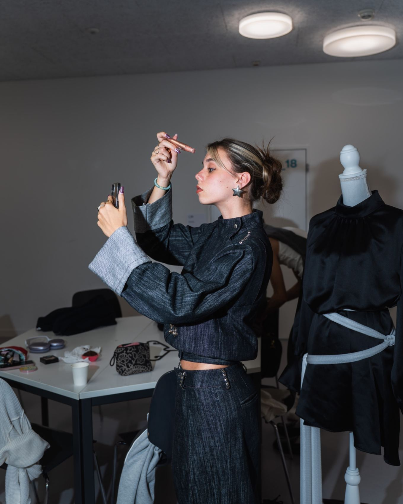

02 / WHAT I DO
The practice
DESIGN / DIRECTION / STYLING

01
Fashion design
Original garments, fashion concepts and silhouette development. Each collaboration begins with a conversation about the idea and its direction.
ENQUIRE ↗02
Creative direction
Visual storytelling, concept development and art direction for fashion imagery, presentations and independent projects.
ENQUIRE ↗03
Styling concepts
Considered styling, image-making and editorial concepts with a strong visual identity.
ENQUIRE ↗04
Independent projects
Original creative initiatives and collaborations — including DMO — The Next Runway.
↗